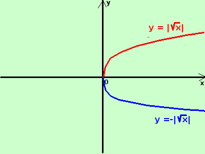

|
sviluppo Seguendo la definizione di Dirichlet dite se le seguenti espressioni rappresentano o meno una funzione reale di una variabile reale evidenziando quale e' l'insieme dominio e quale l'insieme codominio y = √x Non e' una funzione perche', nel suo dominio ad esclusione del punto 0 ad ogni valore di x corrispondono due valori per y Ad esempio per x=4 avremo y=±2 Possiamo suddividere l'espressione sopra in due funzioni utilizzando il modulo y = |√x| y = -|√x| Possiamo attribuire alla x tutti i valori che rendono il termine sotto radice positivo o nullo  Quindi il dominio di entrambe le funzioni e' l'insieme dei numeri reali positivi o nulli D = [0; +∞[Di solito viene considerata solamente la prima funzione scrivendo semplicemente y = √x sottointendendo per il radicale il segno positivo se considero y = |√x| per ogni valore di x in D otteniamo un valore per y quindi e' una funzione Anche il codominio e' tutto D = [0; +∞[ a destra la rappresentazioner grafica |